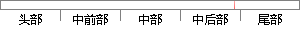

窗口在图像上滑动，将窗口 内 的像素灰度值
片段位置图

相似结果
相似片段：
扰。图像平滑包括空域法和频域法两大类，在空域法中，图像平滑的常用方法是采用均值滤波或中值滤波，对于均值滤波，它是用一个有奇数点的滑动窗口在图像上滑动，将窗口中心点对应的图像像素点的灰度值用窗口内的各个点的灰度值的平均值代替，如果滑动窗口规定了在取均值过程中窗口各个像素点所占的权重，也就是各个像素点的系数，这时候就称
| 对比库： | WriteCheck云资源库 |
| 来源： | www.gissky.com 查看来源 |
| 发布时间： | 2010-03-23 |
| 相似率 | 100% （严重抄袭） |